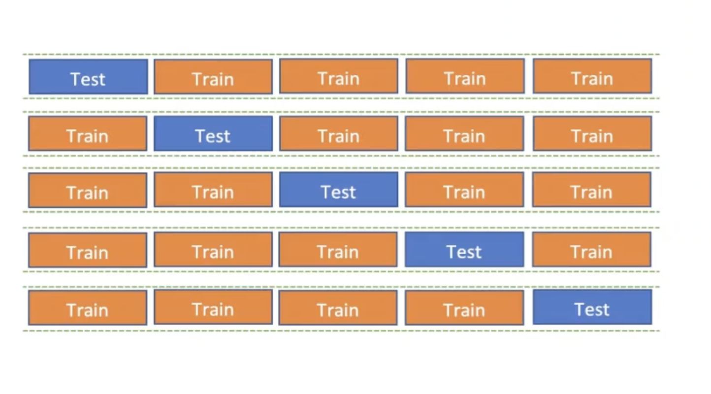

from sklearn.datasets import fetch_california_housing
from sklearn.linear_model import LinearRegression
from sklearn.model_selection import train_test_split
from sklearn.metrics import (
mean_squared_error,
mean_absolute_error,
mean_absolute_percentage_error,
r2_score,
)
def holdout_regression(x, y, testSize):
xtrain, xtest, ytrain, ytest = train_test_split(
x, y, test_size=testSize, random_state=42
)
model = LinearRegression()
model.fit(xtrain, ytrain)
ytrain_pred = model.predict(xtrain)
ytest_pred = model.predict(xtest)
mse_train = round(mean_squared_error(ytrain, ytrain_pred), 2)
mse_test = round(mean_squared_error(ytest, ytest_pred), 2)
mae_train = round(mean_absolute_error(ytrain, ytrain_pred), 2)
mae_test = round(mean_absolute_error(ytest, ytest_pred), 2)
mape_train = round(100 * mean_absolute_percentage_error(ytrain, ytrain_pred), 2)
mape_test = round(100 * mean_absolute_percentage_error(ytest, ytest_pred), 2)
r2_train = round(100 * r2_score(ytrain, ytrain_pred), 2)
r2_test = round(100 * r2_score(ytest, ytest_pred), 2)
print("HOLDOUT REGRESSION RESULTS")
print(f"TRAIN MSE: {mse_train} vs TEST MSE {mse_test}")
print(f"TRAIN MAE: {mae_train} vs TEST MAE {mae_test}")
print(f"TRAIN MAPE: {mape_train}% vs TEST MAPE {mape_test}%")
print(f"TRAIN R2: {r2_train}% vs TEST R2 {r2_test}%")
return2.2. Kfold Cross Validation Example
1. Theory
- Parameters -> elements of the math formula which define the model.
- Hyperparameters -> elements which modify how the train and fit happen.
Decision Tree - p, threshold which defines the decision. - criterion, splitter, max_depth.
1.1. Bias Variance Tradeoff
- Bias -> error due to overly simplistic assumptions in the learning algorithm. It does not get the correct solution.
- Variance -> error due to too much complexity in the learning algorithm. The spread of the solution.

1.2. Evaluation Metrics
1.3. Regression
- Mean Squared/Absolute Error (MS/AE) -> difference between prediction and real value.
- (Symmetrical) Mean Percentage Absolute Error ((S)MAPE) -> absolute difference between prediction and real value.
- < 0.2 good model.
- < 0.05 great model.
- R Squared (R²) -> proportion of variance explained by the model.
- 1 perfect model.
- 0 model does not explain anything.
- Complement to 1 is the variance unexplained by the model.
0.75 good model.
0.95 great model.
1.4. Classification
- Accuracy -> proportion of correct predictions.
0.9 good model.
0.95 great model.
- Precision -> proportion of positive identifications that were actually correct.
- Recall -> proportion of actual positives that were identified correctly.
- F1 Score -> harmonic mean of precision and recall.
All of them are % and the higher the better.
1.5. Neural Networks
- All the above plus
- Loss Function -> function that measures how well the model’s predictions match the actual target values during training.
- The lower the loss, the better the model is performing.
- The graph start from 1 on the y axis because of the way the loss is calculated and tends to decrease as the model learns asymptotically towards 0.
2. Cross Validation
Underfitting -> the model does not capture the underlying trend of the data. High bias, low variance. Overfitting -> the model captures noise instead of the underlying trend. Low bias, high variance. Leakege -> when information from outside the training dataset is used to create the model.
2.1. Holdout Validation
Train -> Test
Except time series, it has to be random shuffled.
2.2. K-Fold Cross Validation

k folds -> k models trained and evaluated.
2.3. Leave One Out Cross Validation (LOOCV)
k = the number of samples in the dataset. Useful for small datasets, but computationally expensive.
2.4. Stratified K-Fold Cross Validation
Useful in a classification problem with imbalanced classes: it keeps the same proportion of classes in each fold as in the whole dataset.
2. Practice
2.1. Holdout Validation Example
california_housing = fetch_california_housing()
x, y = california_housing.data, california_housing.target
print(f"HoldOut CV")
holdout_regression(x, y, testSize=0.2)HoldOut CV
HOLDOUT REGRESSION RESULTS
TRAIN MSE: 0.52 vs TEST MSE 0.56
TRAIN MAE: 0.53 vs TEST MAE 0.53
TRAIN MAPE: 31.5% vs TEST MAPE 31.95%
TRAIN R2: 61.26% vs TEST R2 57.58%Notice how the scoring, except for the R2, is defined as negative, so that the solution is always an optimization problem where higher is better.
import numpy as np
from sklearn.datasets import fetch_california_housing
from sklearn.linear_model import LinearRegression
from sklearn.model_selection import cross_validate
def cross_validation_regression(x, y, cv):
Model = LinearRegression()
Scoring = {
'MSE' : 'neg_mean_squared_error',
'MAE' : 'neg_mean_absolute_error',
'MAPE' : 'neg_mean_absolute_percentage_error',
'R2' : 'r2'
}
CVResults = cross_validate(
estimator=Model,
X=x, y=y,
cv=cv,
scoring=Scoring,
return_train_score=True
)
train_mse = round(np.mean(-CVResults['train_MSE']), 2)
test_mese = round(np.mean(-CVResults['test_MSE']), 2)
train_mae = round(np.mean(-CVResults['train_MAE']), 2)
test_mae = round(np.mean(-CVResults['test_MAE']), 2)
train_mape = round(100 * np.mean(-CVResults['train_MAPE']), 2)
test_mape = round(100 * np.mean(-CVResults['test_MAPE']), 2)
train_r2 = round(100 * np.mean(CVResults['train_R2']), 2)
test_r2 = round(100 * np.mean(CVResults['test_R2']), 2)
print(f'CV Validation Regression')
print(f'train mse: {train_mse} vs test mse: {test_mese}')
print(f'train mae: {train_mae} vs test mae: {test_mae}')
print(f'train mape: {train_mape}% vs test mape: {test_mape}%')
print(f'train r2: {train_r2}% vs test r2: {test_r2}%')
returncalifornia_housing = fetch_california_housing()
x, y = california_housing.data, california_housing.target
print("5 Fold CV")
cross_validation_regression(x, y, cv=5)
print("\n10 Fold CV")
cross_validation_regression(x, y, cv=10)5 Fold CV
CV Validation Regression
train mse: 0.52 vs test mse: 0.56
train mae: 0.53 vs test mae: 0.55
train mape: 31.63% vs test mape: 32.86%
train r2: 60.71% vs test r2: 55.3%
10 Fold CV
CV Validation Regression
train mse: 0.52 vs test mse: 0.55
train mae: 0.53 vs test mae: 0.54
train mape: 31.68% vs test mape: 32.53%
train r2: 60.64% vs test r2: 51.1%2.3. Leave One Out Cross Validation Example
import numpy as np
from sklearn.datasets import load_iris
from sklearn.tree import DecisionTreeClassifier
from sklearn.model_selection import cross_validate, LeaveOneOut
from sklearn.metrics import (
accuracy_score,
precision_score,
recall_score,
f1_score,
make_scorer,
)
def leave_one_out(x, y, depth):
loo = LeaveOneOut()
Model = DecisionTreeClassifier(criterion="gini", max_depth=depth, random_state=42)
accuracy_scorer = "accuracy"
precision_scorer = make_scorer(precision_score, average="weighted", zero_division=0)
recall_scorer = make_scorer(recall_score, average="weighted", zero_division=0)
f1_scorer = make_scorer(f1_score, average="weighted", zero_division=0)
Scoring = {
"accuracy": accuracy_scorer,
"precision": precision_scorer,
"recall": recall_scorer,
"f1": f1_scorer,
}
CVResults = cross_validate(
Model, x, y, cv=loo, scoring=Scoring, return_train_score=True
)
train_accuracy = round(100 * np.mean(CVResults["train_accuracy"]), 2)
test_accuracy = round(100 * np.mean(CVResults["test_accuracy"]), 2)
train_precision = round(100 * np.mean(CVResults["train_precision"]), 2)
test_precision = round(100 * np.mean(CVResults["test_precision"]), 2)
train_recall = round(100 * np.mean(CVResults["train_recall"]), 2)
test_recall = round(100 * np.mean(CVResults["test_recall"]), 2)
train_f1 = round(100 * np.mean(CVResults["train_f1"]), 2)
test_f1 = round(100 * np.mean(CVResults["test_f1"]), 2)
print(
f"LOO Classification | train accuracy: {train_accuracy}% vs test accuracy: {test_accuracy}%"
)
print(
f"LOO Classification | train precision: {train_precision}% vs test precision: {test_precision}%"
)
print(
f"LOO Classification | train recall: {train_recall}% vs test recall: {test_recall}%"
)
print(f"LOO Classification | train f1: {train_f1}% vs test f1: {test_f1}%")
return
iris = load_iris()
x, y = iris.data, iris.target
print(f"Leave One Out Classification")
leave_one_out(x, y, depth=2)
leave_one_out(x, y, depth=10)
leave_one_out(x, y, depth=20)Leave One Out Classification
LOO Classification | train accuracy: 96.0% vs test accuracy: 95.33%
LOO Classification | train precision: 96.19% vs test precision: 95.33%
LOO Classification | train recall: 96.0% vs test recall: 95.33%
LOO Classification | train f1: 96.0% vs test f1: 95.33%
LOO Classification | train accuracy: 100.0% vs test accuracy: 94.0%
LOO Classification | train precision: 100.0% vs test precision: 94.0%
LOO Classification | train recall: 100.0% vs test recall: 94.0%
LOO Classification | train f1: 100.0% vs test f1: 94.0%
LOO Classification | train accuracy: 100.0% vs test accuracy: 94.0%
LOO Classification | train precision: 100.0% vs test precision: 94.0%
LOO Classification | train recall: 100.0% vs test recall: 94.0%
LOO Classification | train f1: 100.0% vs test f1: 94.0%2.4. Stratified K-Fold Cross Validation Example
import numpy as np
from sklearn.datasets import load_iris
from sklearn.neural_network import MLPClassifier
from sklearn.model_selection import StratifiedKFold, cross_validate
from sklearn.metrics import (
accuracy_score,
precision_score,
recall_score,
f1_score,
make_scorer,
)
def stratified_kfold_classification(x, y, n_splits):
skf = StratifiedKFold(n_splits=n_splits, shuffle=True, random_state=42)
Model = MLPClassifier(
hidden_layer_sizes=(50,),
activation="relu",
batch_size="auto",
max_iter=1000,
random_state=42,
)
accuracy_scorer = "accuracy"
precision_scorer = make_scorer(precision_score, average="weighted", zero_division=0)
recall_scorer = make_scorer(recall_score, average="weighted", zero_division=0)
f1_scorer = make_scorer(f1_score, average="weighted", zero_division=0)
Scoring = {
"accuracy": accuracy_scorer,
"precision": precision_scorer,
"recall": recall_scorer,
"f1": f1_scorer,
}
CVResults = cross_validate(
Model, x, y, cv=skf, scoring=Scoring, return_train_score=True
)
train_accuracy = round(100 * np.mean(CVResults["train_accuracy"]), 2)
test_accuracy = round(100 * np.mean(CVResults["test_accuracy"]), 2)
train_precision = round(100 * np.mean(CVResults["train_precision"]), 2)
test_precision = round(100 * np.mean(CVResults["test_precision"]), 2)
train_recall = round(100 * np.mean(CVResults["train_recall"]), 2)
test_recall = round(100 * np.mean(CVResults["test_recall"]), 2)
train_f1 = round(100 * np.mean(CVResults["train_f1"]), 2)
test_f1 = round(100 * np.mean(CVResults["test_f1"]), 2)
print(
f"Stratified K-Fold NN| train accuracy: {train_accuracy}% vs test accuracy: {test_accuracy}%"
)
print(
f"Stratified K-Fold NN| train precision: {train_precision}% vs test precision: {test_precision}%"
)
print(
f"Stratified K-Fold NN| train recall: {train_recall}% vs test recall: {test_recall}%"
)
print(f"Stratified K-Fold NN| train f1: {train_f1}% vs test f1: {test_f1}%")
return
iris = load_iris()
x, y = iris.data, iris.target
print("Stratified K Fold NN | 5 Fold")
stratified_kfold_classification(x, y, n_splits=5)
print("Stratified K Fold NN | 10 Fold")
stratified_kfold_classification(x, y, n_splits=10)Stratified K Fold NN | 5 Fold
Stratified K-Fold NN| train accuracy: 98.0% vs test accuracy: 98.0%
Stratified K-Fold NN| train precision: 98.04% vs test precision: 98.28%
Stratified K-Fold NN| train recall: 98.0% vs test recall: 98.0%
Stratified K-Fold NN| train f1: 98.0% vs test f1: 97.98%
Stratified K Fold NN | 10 Fold
Stratified K-Fold NN| train accuracy: 97.85% vs test accuracy: 96.67%
Stratified K-Fold NN| train precision: 97.89% vs test precision: 97.16%
Stratified K-Fold NN| train recall: 97.85% vs test recall: 96.67%
Stratified K-Fold NN| train f1: 97.85% vs test f1: 96.6%